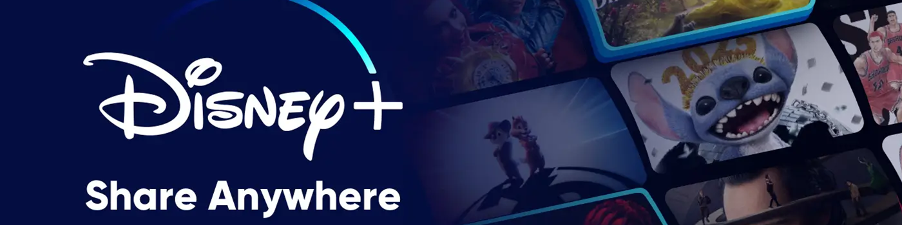
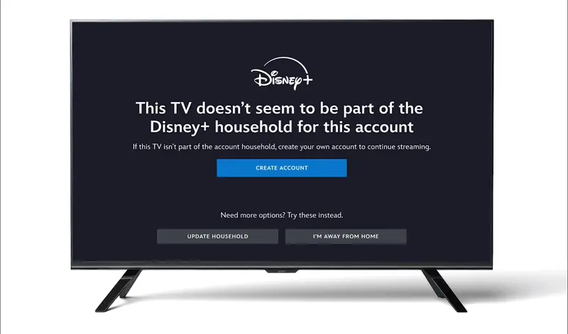

2025 年如何分享 Disney Plus：終極指南
作為全球領先的流媒體平台，Disney+已經積累了龐大的用戶基礎，根據華特迪士尼公司2025財年第一季度報告，其全球訂閱用戶已超過 1.25億 。
這種激增可能與2024 年 6 月推出的 賬戶共享限制 有關——一旦共享變得更加困難，更多的用戶就會選擇個人訂閱。
以前，只需一個賬號，就可以隨時隨地和家人朋友分享觀看；現在，如果住不在同一地址，賬號共享就變得既麻煩又昂貴。
如果你正在考慮與家人和朋友分享 Disney+，或者對分享政策仍有疑問，本文將為你提供詳細的政策信息，並介紹實用的 低成本分享 選項，以幫助你與親人繼續輕鬆地觀看節目。
簡而言之： 是的，但有嚴格的限制 。自2024年6月起，Disney+已將合法的免費共享限制在"家庭"內部。
在同一個家庭 中，你可以與家人共享一個 Disney+ 帳戶，無需額外付費，並且每個成員都可以擁有自己的個人資料。
但是，如果你想與家庭以外的人共享，則不再屬於免費共享。
什麼是 Disney Plus 家庭？
要理解共享的範圍，首先需要明確 Disney+ 對"家庭"的定義。根據 Disney+ 的官方解釋，" 家庭 "是指與你主要個人住所相關的設備集合。
與Netflix 的共享限制類似，Disney+ 會根據使用模式和網絡環境來確定設備是否屬於同一家庭。如果某個設備在主家庭網絡上頻繁使用，則會被識別為該家庭的一部分。
如果你 搬家或更改主要位置 ，你需要在新住所完成" 更新家庭 "流程以重置你的家庭並使用你的密碼進行驗證。
旅行 或暫時離家時，你仍然可以在受支持的設備上觀看。如果你看到"這台電視似乎不屬於此帳戶的 Disney+ 家庭"消息，請選擇" 我不在家 "，然後按照屏幕上的說明完成一次性驗證並繼續使用該服務。
有多少人可以同時觀看 Disney Plus？
可以同時播放流媒體的設備數量取決於你的 Disney+ 訂閱計劃：
- 高級計劃：支持最多 4 台設備同時流式傳輸，非常適合家庭或多個用戶。
- 標準計劃（有廣告或無廣告）：支持最多 2 台設備同時播放。
- 捆綁計劃：如果你的訂閱包含 Hulu，則 Disney+ 上的 Hulu 內容最多可同時在 2 台設備上播放。
有多少台設備可以登錄 Disney Plus？
Disney+ 允許一個帳戶在最多 10 台設備 上登錄，並支持下載內容以供離線觀看。它兼容大多數主流流媒體設備，包括 Apple TV、Google TV Chromecast、Roku、Amazon Fire TV、PlayStation、Xbox 和 Nintendo Switch。
你可以同時在 10 台設備上保持登錄狀態，但最多只能有 4 台設備可以同時傳輸內容。
如何設置多個用戶配置文件？
為了讓不同成員在共享帳戶時獲得更好的體驗，Disney+ 提供了用戶個人資料功能。一個帳戶 最多可以創建 7 個個人資料 。設置步驟如下：
- 登錄 Disney+ 並點擊右上角的個人資料圖標。
- 選擇編輯個人資料。
- 單擊"添加配置文件"或管理現有配置文件。
- 如果為兒童創建個人資料，請勾選 "兒童個人資料" 。系統會自動過濾內容，僅顯示適合兒童的 G 級和 PG 級影片，並屏蔽不合適的影片。
通過為家人或朋友創建單獨的個人資料，每個人都可以享受自己的個性化觀看空間。你還可以清除舊的"繼續觀看"記錄，以避免混淆。每個個人資料都會根據個人觀看歷史和偏好提供個性化推薦，使體驗更加量身定製且流暢。
如何使用 VPN 繞過家庭限制？
儘管 Disney+ 使用 IP 地址和設備使用模式來檢測"家庭"的範圍，但一些用戶試圖使用 VPN 繞過這些限制。理論上，通過VPN 將所有設備路由到同一地理位置 ，Disney+ 可能會將它們識別為同一"家庭"的一部分。
典型步驟如下：
- 選擇支持流媒體的高質量 VPN 服務
- 將你的設備連接到與主帳戶 相同的 IP 地址或區域服務器
- 登錄 Disney+ 並模擬使用情況，就像所有設備都在同一個家裡一樣
然而，使用 VPN 繞過共享限制存在 一定風險 。Disney+ 的服務條款明確禁止使用 VPN 或類似技術規避其地理或共享政策。如果被發現，你的帳戶可能會被暫停甚至永久封禁。
此外，VPN 連接可能 不穩定或速度較慢 ，這可能會影響觀看體驗，尤其是 4K 內容。
因此，雖然 VPN 可以提供技術解決方法，但用戶需要權衡其便利性和潛在風險。
如果你想要分享的對象不屬於同一家庭，Disney+ 推出了一項名為 "額外會員"的官方 付費分享選項 。在此模式下，賬戶持有人可以每月額外支付費用，在現有訂閱的基礎上添加一名額外會員。
費用根據所選計劃而有所不同：
對於獨立的 Disney Plus 訂閱 ：
- 基本計劃：+6.99美元/月
- 高級計劃：+9.99美元/月
對於 Disney Plus 捆綁計劃 ：
- Disney+ + Hulu Basic：+7.99 美元/月
- Disney+ + Hulu Premium：+10.99 美元/月
- Disney+ + Hulu + ESPN 基本版：+11.99 美元/月
- Disney+ + Hulu + ESPN Premium：+14.99 美元/月
需要注意的是，每個 Disney Plus 帳戶只能添加一名額外會員 ，並且額外會員必須年滿 18 歲 ，與主帳戶持有人居住在 同一國家或地區 ，並且不能已經是 Disney+、Hulu 或 ESPN+ 的訂閱者。
Disney Plus 付費分享在哪裡可用？
額外會員功能目前在美國、加拿大、拉丁美洲、歐洲、亞太地區以及哥斯達黎加和危地馬拉等部分中美洲國家可用。
如何在我的 Disney Plus 訂閱中添加額外會員？
作為賬戶持有人，如果你想使用付費分享功能，首先需要確認你的訂閱計劃支持"額外會員"選項。然後按照以下步驟操作：
- 登錄 Disney+ 網站或移動應用程序並轉到你的個人資料設置。
- 在" 計劃和計費 "下，找到並選擇邀請額外成員。
- 查看系統顯示的額外費用並同意繼續。
- 輸入額外會員的電子郵件地址並發送邀請。
邀請發出後，受邀者將收到一封電子郵件，指導他們完成個人資料設置。設置完成後，他們即可以額外會員身份開始使用 Disney Plus。額外的月費將自動計入你的下一個結算週期。
如何將他人踢出你的 Disney Plus 帳戶？
如果你需要刪除某人對你的 Disney Plus 帳戶的訪問權限，有以下幾種方法：
- 更改密碼
最簡單的方法是登錄 Disney Plus 網站，前往 "個人資料">"帳戶">"訪問和安全" ，然後更改密碼。更改密碼後，所有使用舊密碼的設備將自動失去訪問權限。之後，你只能與仍然有權使用該帳戶的用戶共享新密碼。
- 設備管理
登錄 Disney Plus 網站，前往 "個人資料">"帳戶">"訪問和安全">"設備管理" 。在這裡，你將看到所有已登錄設備的列表。選擇要移除的設備，然後點擊 "註銷" 即可將其從你的帳戶中移除。
- 取消額外會員
如果你之前通過付費分享功能添加了額外會員，你可以直接在賬戶設置中移除其訪問權限。被移除的額外會員可以選擇將其個人資料轉移到新的獨立 Disney Plus 訂閱，同時保留其觀看歷史記錄和個性化設置。
- 完全取消訂閱
作為最後的手段，你可以完全取消你的 Disney Plus 訂閱。前往 "個人資料">"帳戶">"訂閱">"選擇你的計劃">"取消訂閱" 。這將終止與該帳戶關聯的所有人的訪問權限。
奈飛小鋪 Disney Plus 共享如何運作？
如果你不想受到家庭規則的限制或為額外會員支付高額的額外費用，那麼在 奈飛小鋪 上購買共享的 Disney Plus 訂閱 帳戶是一個更實惠的選擇。
奈飛小鋪 是一個熱門的訂閱共享平台，涵蓋了豐富的付費服務，包括 Disney Plus、音樂平台，甚至 AI 軟件。在這裡，你可以與其他用戶分攤 Disney Plus 賬戶的費用，以遠低於官方訂閱的價格享受全套服務。
如何與 奈飛小鋪 分享 Disney Plus？
在奈飛小鋪上分享Disney Plus非常方便，整個過程只需幾分鐘即可完成：
- 進入 奈飛小鋪網站 ，點擊右上角的頭像 登錄/註冊即可登錄或創建賬戶。

- 登錄後，在首頁找到Disney+選項，點擊進入。

- 選擇訂閱時長和類型，查看總價，然後輸入9折專屬優惠碼：songyu
- 單擊立即加入，輸入你的付款詳情，然後完成購買。
- 付款完成後，奈飛小鋪 將立即處理你的訂單並向你提供 Disney Plus 登錄信息。
通過 奈飛小鋪 分享 Disney Plus 的好處
選擇在 奈飛小鋪 上分享 Disney Plus 有三個主要優勢：
- 首先是成本低。
使用官方高級套餐，添加額外會員每月需額外支付 9.99 美元。但在 奈飛小鋪，你 每月只需支付 9.7 元 即可享受相同的完整服務，一年下來可節省一半以上的費用。
- 第二是便利性。
Disney+ 的家庭模式要求所有成員居住在同一地址，這會產生地理限制，共享內容也不太現實。而使用 奈飛小鋪，你在購買後即可立即獲得一個獨立的賬戶—— 無需綁定地址 ，隨時隨地觀看，更加靈活便捷。
- 最後，還有安全和穩定。
奈飛小鋪 平台採用可靠的共享系統，賬號來源合法，並提供售後支持。這可以避免非正式賬號拆分中常見的問題，例如賬號突然被封禁或服務中斷，從而確保順暢無憂的共享體驗。
比較三種共享 Disney Plus 的方式
每種共享方法都有其優缺點，因此我將它們的成本、限制和優益並列列出，以便你更輕鬆地決定哪種選擇最適合你。
| 分享方式 | 成本 | 限制 | 優勢 | 推薦 |
|---|---|---|---|---|
| 家庭共享 | 無需額外費用 | 必須屬於同一家庭 | 完全免費 | ⭐️⭐️⭐️⭐️ |
| 額外會員共享 | 高級版：+9.99 美元/月 基礎版：+6.99 美元/月 捆綁計劃：+7.99 美元/月起 |
必須年滿 18 歲 必須位於同一國家/地區 |
官方渠道，長期穩定 | ⭐️⭐️⭐️ |
| 奈飛小鋪共享 | 高級版：約 27/月 | 年度訂閱 | 最低價格 方便使用 退款保證 |
⭐️⭐️⭐️⭐️⭐️ |
總體而言，這三種方法代表了不同的權衡： 家庭共享 最適合住在一起的家庭， Extra Member（額外成員） 提供了一種跨家庭共享的官方方式，而 奈飛小鋪 則因其靈活性和成本效益而脫穎而出。
對於那些想要以較低成本分享 Disney Plus 的人來說，奈飛小鋪 顯然是最具吸引力的選擇。
最後的話
流媒體訂閱價格連年上漲，對很多用戶來說已成為負擔。在這種背景下，共享無疑是一種更具成本效益的選擇。
在可用的選擇中，奈飛小鋪 提供了真正實惠且無憂的解決方案： 更低的價格 、 簡單的設置 以及與官方訂閱 相同的體驗。
更重要的是，奈飛小鋪 不僅支持Disney+，還涵蓋了各種主流流媒體服務，包括 YouTube Premium共享 等熱門選項，滿足不同用戶的觀看需求。
無論你喜歡獨自欣賞內容還是與家人和朋友分享，奈飛小鋪 都能確保你獲得穩定高效的流媒體體驗。
常問問題
分享 Disney+ 合法嗎？
是的，這是合法的。無論是通過在同一地址內免費共享家庭，還是通過付費添加額外成員在家庭外共享，這兩種方式都是官方允許的。如果你選擇在 奈飛小鋪 購買共享賬戶，你還可以以較低且合規的價格使用完整服務。
Disney Plus 會停止賬戶共享嗎？
Disney+ 並未完全禁止共享，但自 2024 年起，它嚴格限制家庭以外的使用。要與非家庭成員共享，你必須支付額外會員費用，每月費用約為 6.99 至 14.99 美元。
我可以在 Disney Plus 上使用 Away from Home 多少次？
Disney+ 並未公布"離家在外"功能的使用次數限制，但確實存在限制。每次使用都需要郵箱驗證，頻繁更新或重複激活可能會觸發警告，甚至對你的賬戶進行暫時或永久的限制。
有多少家庭可以使用 Disney+？
Disney+ 訂閱僅限一個家庭使用。一個帳戶最多可創建 7 個個人資料，並支持同時在最多 4 台設備上觀看。如需跨家庭共享，你只能添加一名額外會員。